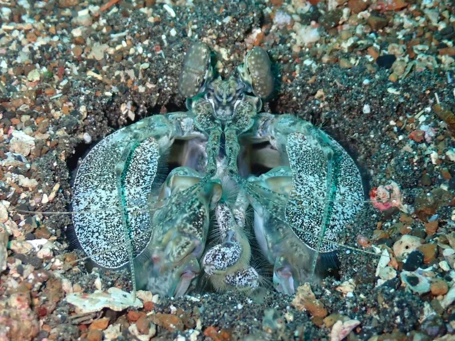

甲壳动物 · 动物界
斑琴虾蛄 Lysiosquillina maculata

体型最大的虾蛄之一，身体有黑白相间的横带，尾节像琴，生活在热带珊瑚礁和沙泥底，用锤状颚足击碎猎物。
- 分类
- 门节肢动物门纲软甲纲目口足目科琴虾蛄科属琴虾蛄属
- 栖息环境
- 热带珊瑚礁、岩礁和沙泥底的洞穴中
- 地理分布
- 印度-太平洋热带海域，包括中国南海
- 保护级别
- IUCN 暂无评估；中国未列入国家重点保护名录
物种志
斑琴虾蛄体长可达 30–40 cm，是体型最大的虾蛄之一，身体呈长筒形，背面有黑、白或浅黄相间的横带，尾节宽大如琴；复眼大，触角发达，颚足特化为锤状。
它分布于印度-太平洋的热带海域，包括中国南海、东南亚和澳大利亚北部，栖息于珊瑚礁、岩礁和沙泥底的洞穴中，白天守在洞口，夜间出来捕食蟹类、贝类和小鱼。斑琴虾蛄的锤状颚足能快速击碎贝壳和蟹壳，攻击速度极快，因此也被称为“螳螂虾”。它肉质鲜美，是沿海经济虾类，但捕捞和观赏贸易对其种群有影响；它的洞穴常有两个出入口，受惊时迅速缩回洞中，雌虾负责护卵。目前 IUCN 暂无评估；中国未列入国家重点保护名录。
形态与习性
- 食性捕食蟹类、贝类和小鱼
- 体长可达 30–40 cm
- 识别身体有黑白相间横带，尾节宽大如琴
- 攻击锤状颚足快速击碎贝壳和蟹壳
- 习性穴居，洞穴常有两个出入口
- 繁殖雌虾负责护卵
趣味知识
- 斑琴虾蛄是体型最大的虾蛄之一，身长可达 40 厘米。
- 它的锤状颚足挥出时速度极快，能直接敲碎蟹壳。
- 它住在自己挖的洞穴里，洞口常常有两个出口。